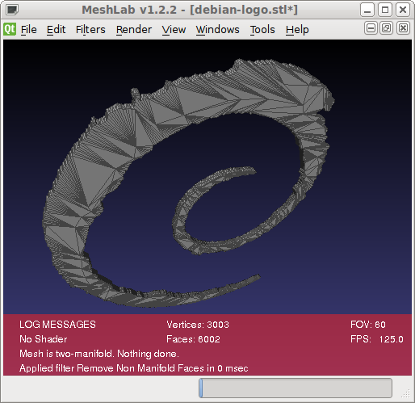
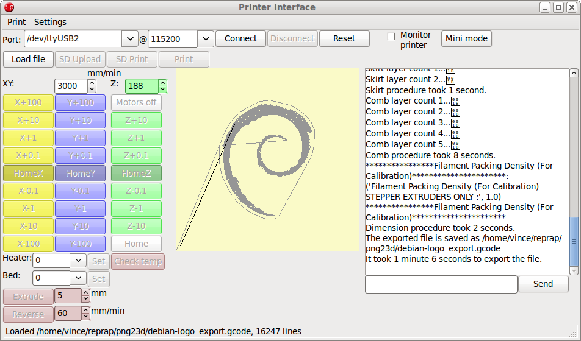
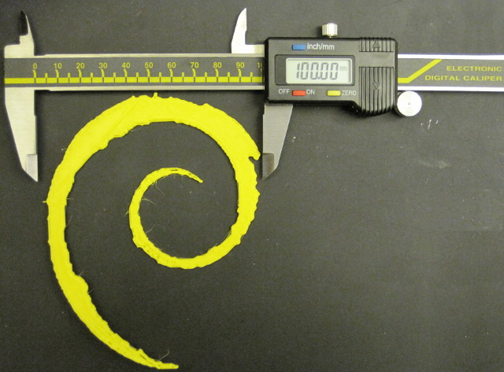

by kyllikki
by kyllikki
Debian open logo and STL output
This example is a simple extrusion of the Debian logo into an STL file and a physical print of the resulting file.
The modified debian logo png from the Debian open logo and scad output example was reused here.
The png23d program was run to generate a binary STL mesh file with a width of 100 and a depth of 2 (The verbose switch is used just for infomation here).
$ png23d -v -o stl -w 100 -d 2 debian-logo.png debian-logo.stl Reading from png file "debian-logo.png" Writing output to "debian-logo.stl" Generating binary STL Generating mesh from bitmap of size 200x246 with 1 levels Commencing mesh simplification on 44792 facets Indexing 134376 verticies Bloom filter prevented 22325 (16%) lookups Bloom filter had 73 (0%) false positives Indexing required 112051 lookups with mean search cost 82 comparisons Number of unique verticies in result index 22398 Number of facets in result 6002 Writing Binary STL output Completed in 0sThe default result in a smooth extrusion with a single level (every pixel is opaque at this level) and white (colour 255) used as transparent.
The resulting STL file was loaded into meshlab and non manifold faces removed.
This shows the mesh is manifold additionally the face simplification results can also be seen. Although not the absolute simplest form the raw unsimplified version (obtained by setting optimisation level to 0) has 44,792 faces instead of the 6002 found here.
The STL file was loaded into the Printrun project tool Pronterface which automatically ran skeinforge on the file to layer slice the input.
My printer settings have a 0.4mm layer height which produced 5 layers for the 2mm of output. The slicing procedure took 66 seconds to complete, the same procedure on the unoptimised STL took 81 seconds.
The print itself took 13 minutes 45 seconds to complete and resulted in a reasonable result. I did not have any red filament so the result is in yellow but is shown here next to a read vinyl transfer sticker on the back of my laptop.
The output dimensions are also correct
{kind=link}